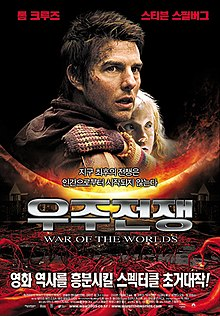
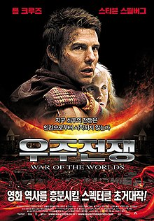

마션
NASA 아레스3탐사대는
화성을 탐사하던 중
모래폭풍을 만나고
팀원 마크 와트니가 사망했다고
판단 한 후 그를 남기고 떠난다.
극적으로 생존한 마크 와트니는
남은 식량과 기발한 재치로
화성에서 살아남을
방법을 찾으며
자신이 살아있음을 알리려 노력한다.
인터스텔라
세계 각국의 정부와 경제가
완전히 붕괴된 미래가 다가온다.
지난 20세기에 범한 잘못이 전 세계적인 식량 부족을 불러왔고,
ASA도 해체되었다.
이때 시공간에 불가사의한 틈이 열리고,
남은 자들에게는
이 곳을 탐험해 인류를
구해야 하는 임무가 지워진다.
사랑하는 가족들을 뒤로 한 채
인류라는 더 큰 가족을 위해,
그들은 이제 희망을 찾아
우주로 간다.
그리고 우린 답을 찾을 것이다. 늘 그랬듯이…
우주전쟁